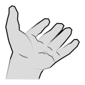

Menu
Unspecified Device (Change)
Help
Sorry, couldn't find the requested entry
×
Sorry, couldn't find the information to display
×
What kind of phone or tablet are you using?
×
The page will now reload